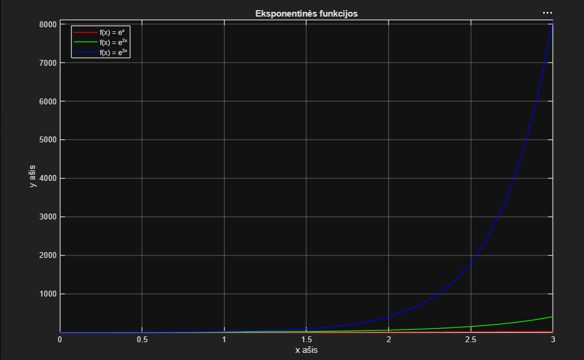
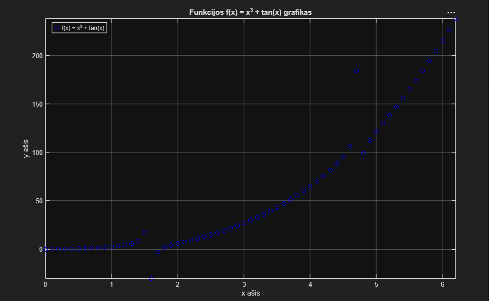
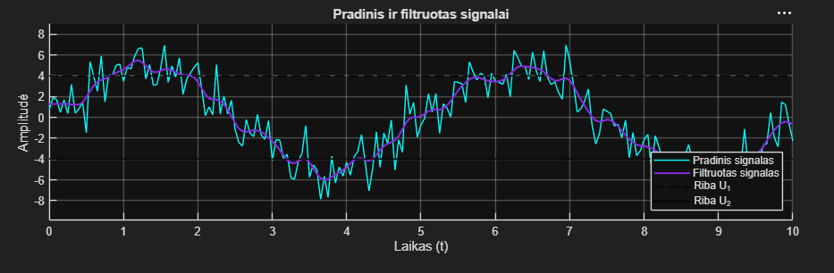

Atlikti darbai
Skriptinio programavimo (MATLAB 3–4 laboratorinių darbų) metu sukurti matematinės analizės ir signalų apdorojimo grafikai.
- Visi darbai
- Funkcijų analizė
- Signalų apdorojimas


Eksponentinių funkcijų palyginimas
MATLAB 3 LD darbas, kuriame intervale [0, 3] palygintas trijų eksponentinių funkcijų (eˣ, e²ˣ, e³ˣ) augimo greitis naudojant skirtingas kreivių spalvas ir legendą.


Funkcijos f(x) = x³ + tan(x) grafikas
MATLAB 3 LD užduotis: skaitinis funkcijos reikšmių apskaičiavimas ir taškinis atvaizdavimas intervale [0, 2π], išryškinant tangentinės dedamosios trūkio taškus.


Pradinis ir filtruotas signalai
MATLAB 4 LD signalų apdorojimo darbas: pradinio triukšmingo signalo išlyginimas skaitmeniniu filtru ir amplitudės įvertinimas pagal nustatytas ribas U₁ bei U₂.